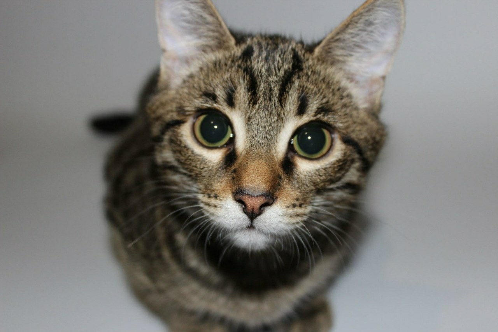
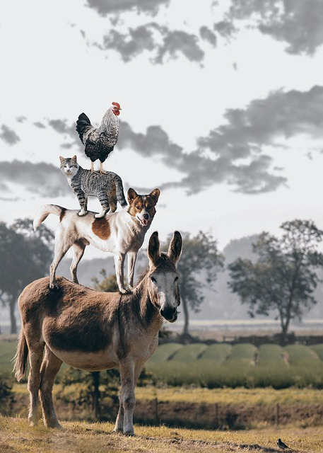
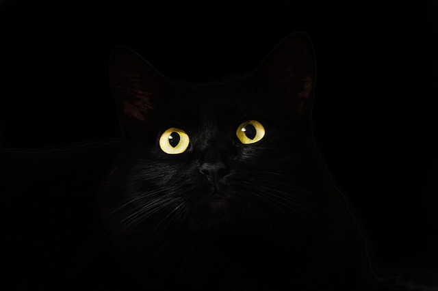

Александр
Возраст: 2 года
Порода: рыжык
Весёлый непоседа
Весёлый и озорной кот который не знает усталости. Он станет лучшим компаньоном и
спутником в вашей семье.

Володя
Возраст: 3 месяца
Порода: дворовый
Хочешь рыбку?
Ловит рыбку лучше, чем лиса на хваост в одноц из известных сказок.

Хантер
Возраст: 4 месяца
Порода: рывок
Охотиться, как дышит
Неуталимый охотник, который обязательно съест все твои цветы н даче.

Звёздочка
Возраст: 1 год
Порода: бритель
Астроном по призванию
Поможе изведать все неизвестные звёзды и побывать на всех планетах, не животное, а один
плюс на 4-х лапах.

Кот в сапогах
Возраст: скрыто
Порода: лучшая
Самое имя за себя говорит
Это не просто кот, а сам Кот в сапогах, кто повидал не один бой и не одну историю
приключений!

Тигруля
Возраст: 5 лет
Порода: тигр
Мой братан Тигр
Один из известнейших тигров, снимался в одном из клипов и просто милый котик!

Аслан
Возраст: скрыто
Порода: благородная
Любит спасать маленьких детей от злых королев
Тот самый Аслан из романа "Хроники Нарнии". Свой мир спас, а теперь хочет и твой спасти.

Кот музыканьтий
Возраст: 14 лет
Порода: бременский
Муза моё всё
Любит по вечерам с друзьями собраться поиграть и похитить приценнсу из замка.

Симба
Возраст: 12 лет
Порода: дисней
Дружит с мангустом
Не просто лев (котик), а тот самый симба из вашего мультика детства. Как я стар...

Мрак
Возраст: 8 лет
Порода: тёмный
Не просто кот, а нечто темнее
Озорной шалунишка поиграть в темноте с твоими ногами или костяшками.